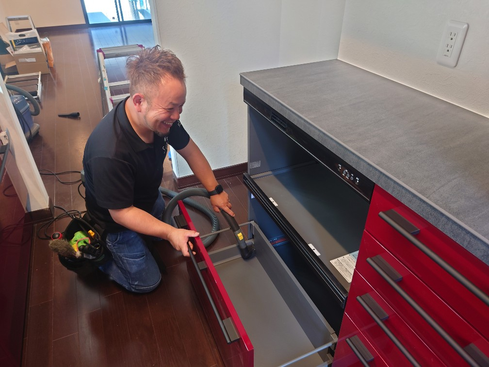
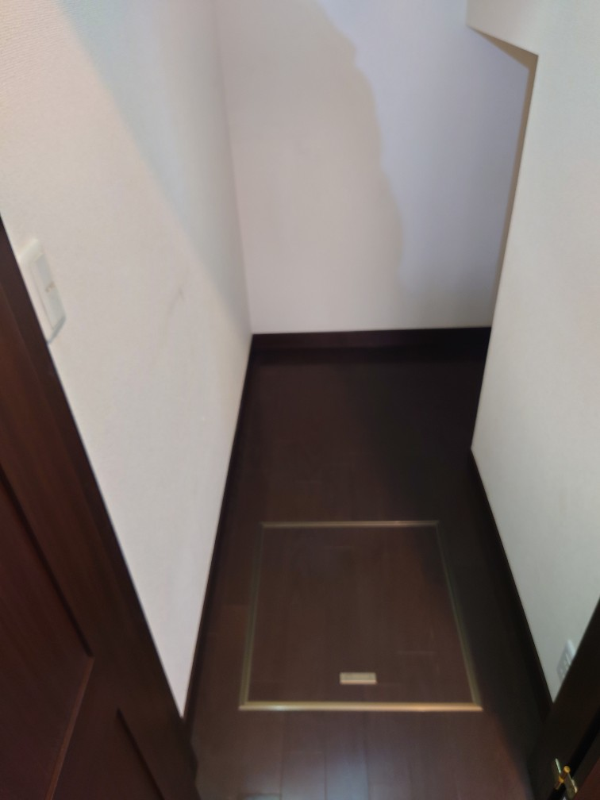
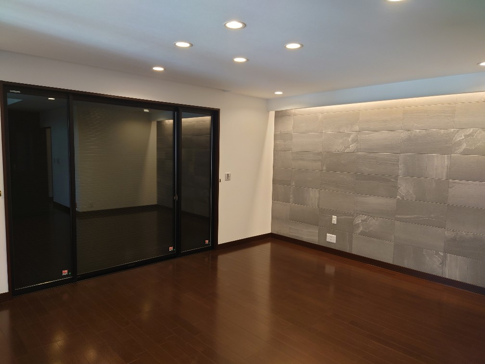
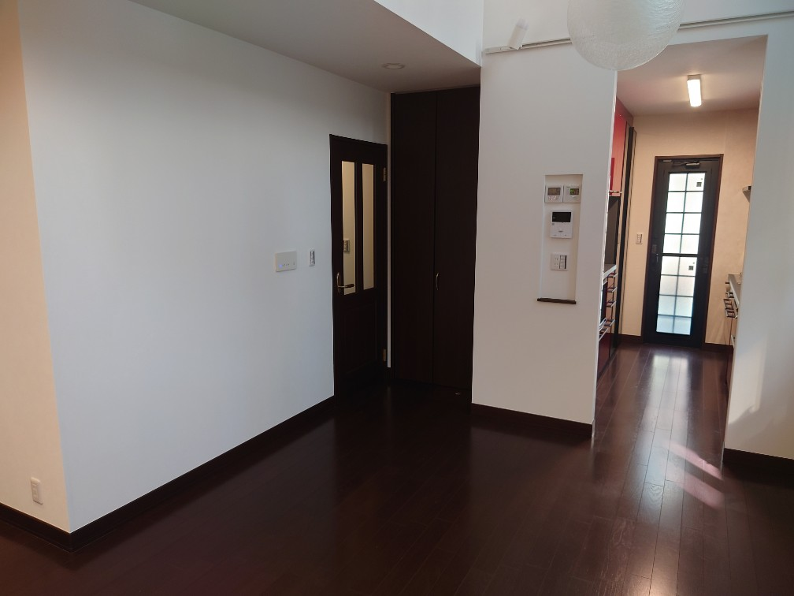
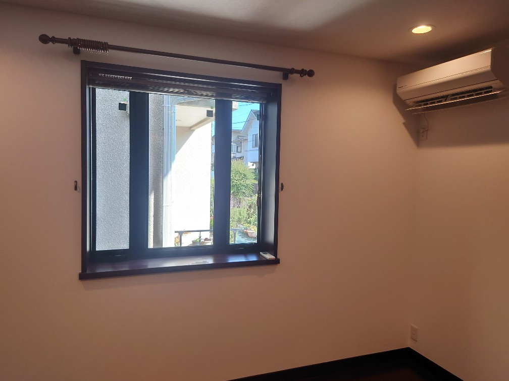
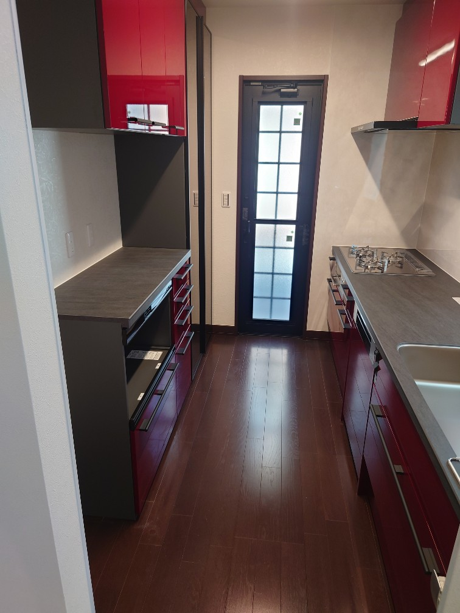
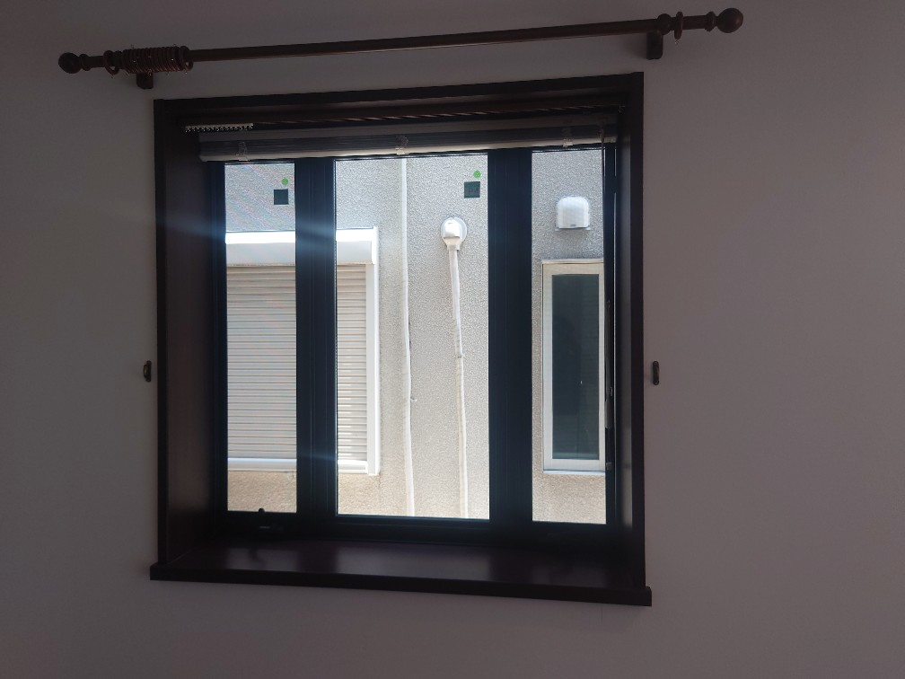
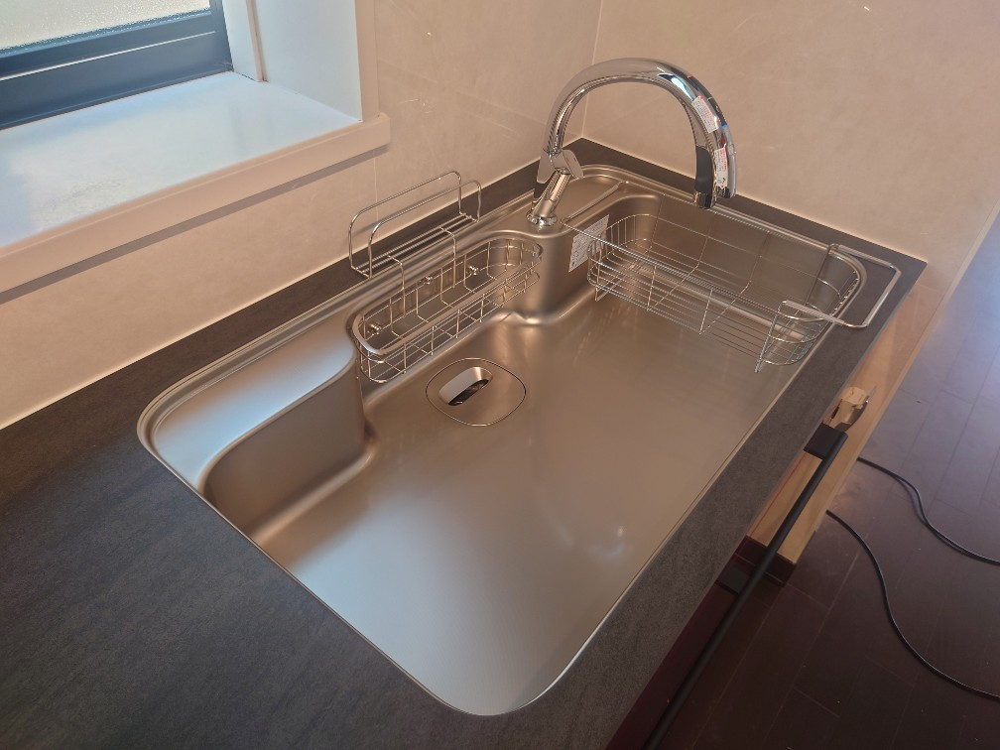
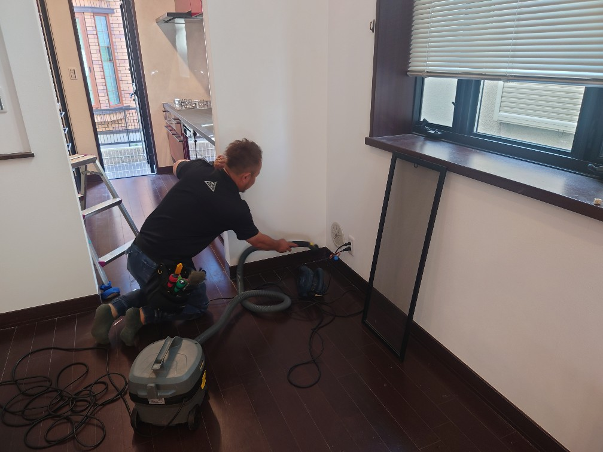

千葉美浜区 N様の新居一戸建て135㎡の空室スペシャルクリーニング（3日間完全コース）を実施しました!

千葉美浜区の大変美しい135㎡の一戸建て、N様新居の転居前空室スペシャルクリーニングを、3日間完全コース（全て綺麗になる迄徹底的クリーニングコース）で実施しました。転居前に室内の隅々を磨き上げて、気持ちよく新居生活をスタート出来るようにDAIZENメソッドを駆使して、建具、床面、窓・サッシ・網戸クリーニング、シャッター高圧洗浄クリーニング、など全方位のスペシャルクリーニングを実施しました。3日間でエキスパート3名がDAIZENメソッドのテクニックを投入してお客様の「綺麗にしてほしい」というご希望を実現するスペシャルクリーニングコースです、ぜひ新居への転居前空室クリーニングのご要望がございましたら、私どもにお問い合わせください!宜しくお願いいたします。







